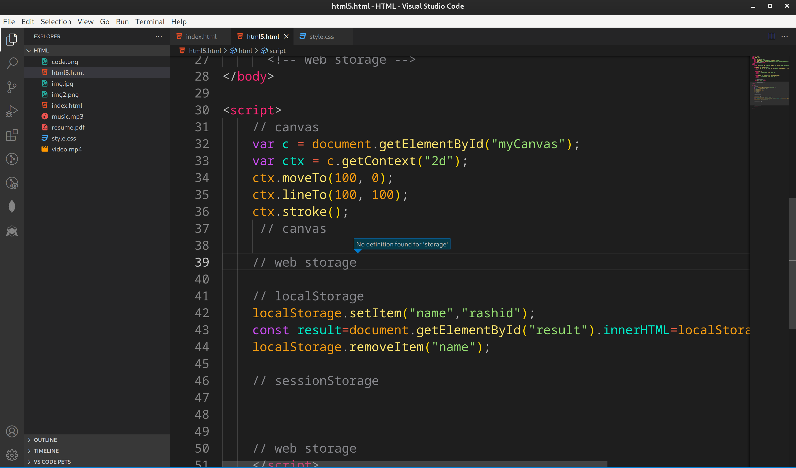
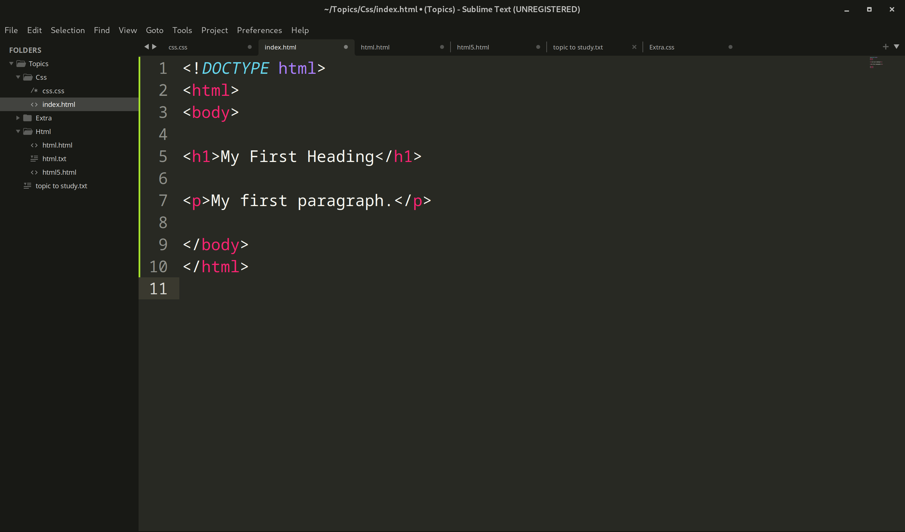
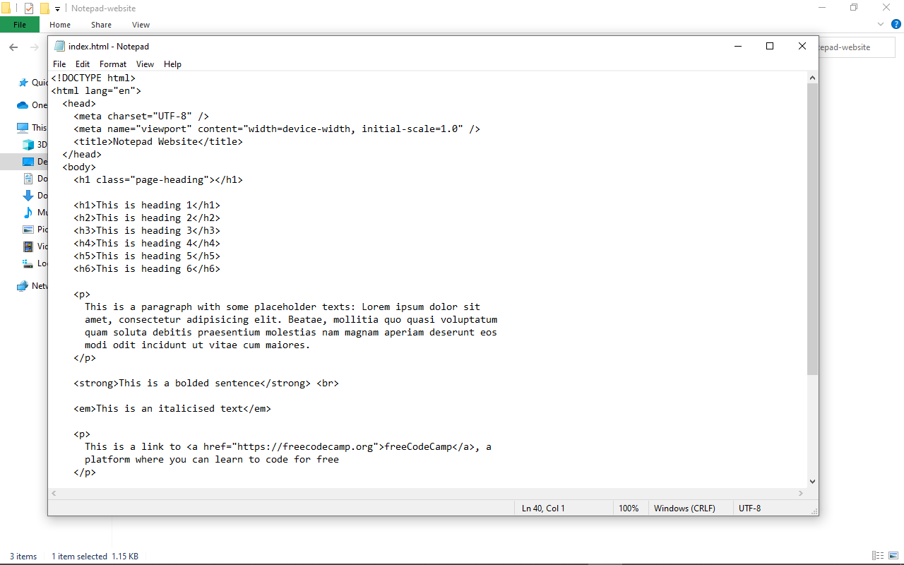

Now that we’ve gotten the basic theory out of the way. It’s time to learn how to build our first website.
First off, we must ensure that we have the right tools. Most important, we need an HTML editor.
There are many choices on the market. Here are a handful of the most popular:
VsCode
One of the most popular IDEs for web development.VsCode as it is free and also offers cross-platform.
Visual Studio Code is considered the best JavaScript IDE for Windows, Mac, and Linux.

The most popular and also my recommendation would be VSCode, I’ve been using it for years.
Pros
- Lightweight, and fast
- Free
- Simple and Clean User Interface
- Built-in Terminal
- Multiple Cursor
Cons
- No support for older programming version such as ASP.NET
- Debugging features are limited
Sublime Text 3
However, for this tutorial, we will use the Sublime Text 3 as it is free and also offers cross-platform
support for Windows, Mac, and Linux users.

Sublime Text 3 has a mini-preview window on the right.
Pros
- Easily customizable
- Beginner-friendly
- Pleasant color schemes to choose from.
Cons
- Can’t print documents or code
- No toolbar or dashboard available.
Notepad
Another common choice for HTML and other language coders is Sublime Text 3 as it is free and also offers cross-platform.
It is a tiny program to download and perform the functions you need for writing clean code.

This is Notepad ++. Far from glamorous but does the job.
Pros
- Distraction-free interface
- Auto-completion feature
- Plugin options for extended functionalities.
Cons
- Can be difficult to get used to for beginners
- No support for Mac.
What To Avoid
Do not use Microsoft Word or any other word processor when writing HTML code,
only an HTML editor or at the very least, your machine’s built-in notepad, is suitable for the task.
Secondly, ensure that you’ve installed a number of different browsers
such as Chrome and Firefox in order to preview your upcoming creation.